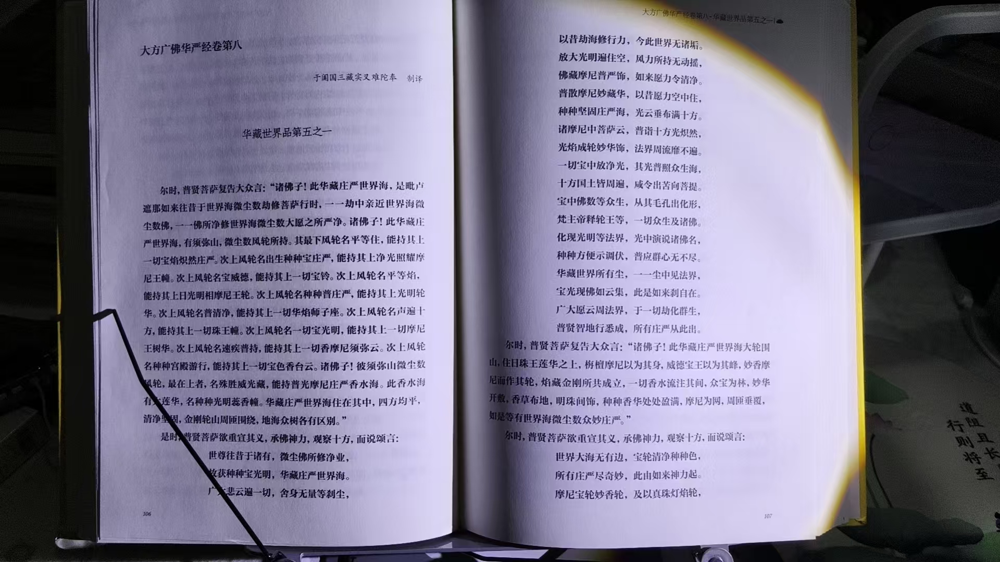
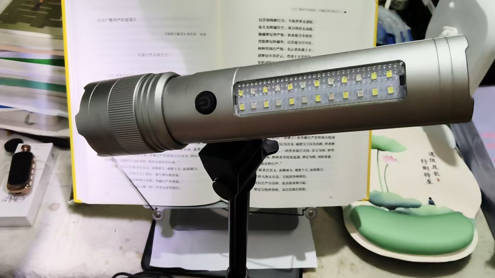
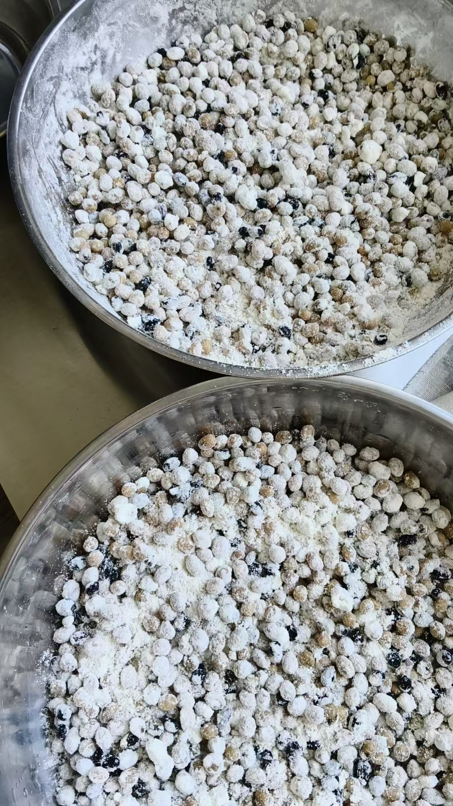
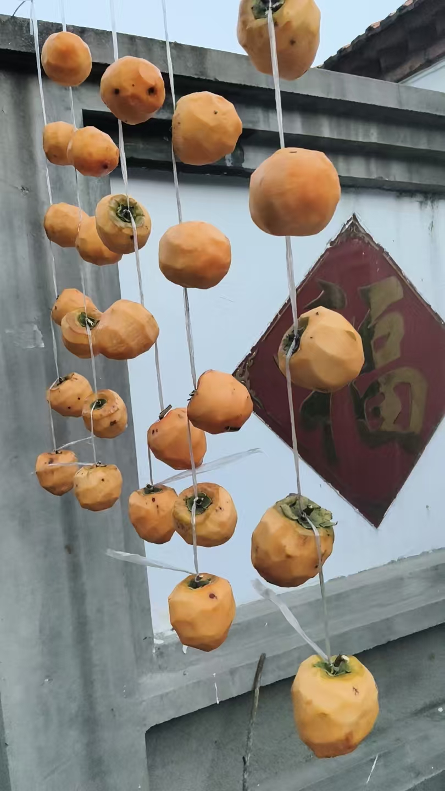

20261005每天单盘，一年就能双盘自如了 剥夺自己的休息时间，一个小时 或者早晚各一个小时
修炼修行符咒术法跏趺坐
双盘的重要性
严格要求自己
降伏自己的内心
一切欲望都要降伏
很明显，有学生十几年了，还不能双盘，那不行
每天单盘，一年就能双盘自如了
勤奋
加班加点
大多数人还在熟睡的时候
剥夺自己的休息时间，一个小时
或者早晚各一个小时
修炼，成功进步的机会就大
不生懈怠心
人勤心不懒
修炼的要义是充分休息
古人说的是大休歇一会
放开自己
[呲牙][呲牙]有些教师，教授，还在纠结脑屏在哪里
我的论述已经很全面
人身无处不脑屏
眉心印堂穴，那是天目
古人开天目，不是天眼
分的很清楚
天目是松果体，第三只眼
神佛像上画的很清楚
额头内部是脑灵屏
呈像，储存记忆
透过脑屏，天目，两个都可以，性光体走进去，走出去
才是小脑屏，现在叫小脑屏，以前没有这名词
叫得道
走出小脑屏，就得了神通
科学界不能叫神通
强名，小脑屏
穿越空间，搬运之类各种操作，并不在体内进行
所以说是走出去，做到的
西方的名词，叫超越冥想
引导性光体进入高维世界


讲课所有理论，经里都有
我讲的为什么没有异议
有根有据
夫唯不争，故天下莫能与之争
只讲验证过的，古人讲过的
我教的功能，不仅自己会，任何孩子都一学就会
先严格要求自己，
严以律己，宽以待人。
别去说孩子不行
真正不行的是自己
就会几个小术，教不了人而已[憨笑][憨笑]
因人而异，因材施教
真人也
读一节，讲几句
这是真参悟
讲的才是真理
不是参悟佛经，是参悟人生
我从小讲的，不仅没错，华严经里更讲出了未来要讲的细节修法，
所以，我讲的依然是最高的，最正确的，最完美的
法
[憨笑][憨笑][憨笑]
无可挑剔
要想修，就潜心听
不想听，就不成正道
不得正果
荒废此生
大心，不是狂妄心
我说的修法，是经里说的，所以说，很高
科委时代，广才儒释道
学的是佛祖，道尊，孔圣人
一业障目图个仨瓜俩枣，慧眼方知真人无尽宝藏[合十][呲牙]
好把旧书多读到，義言一出见英明
一份做酱油，一份做豆瓣酱
第一天，白毛
第二天，长绿毛

